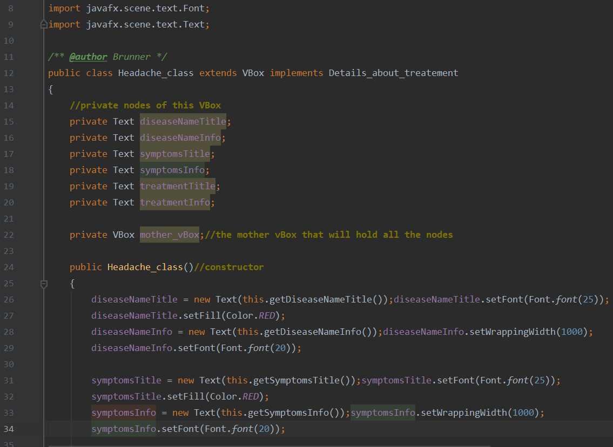
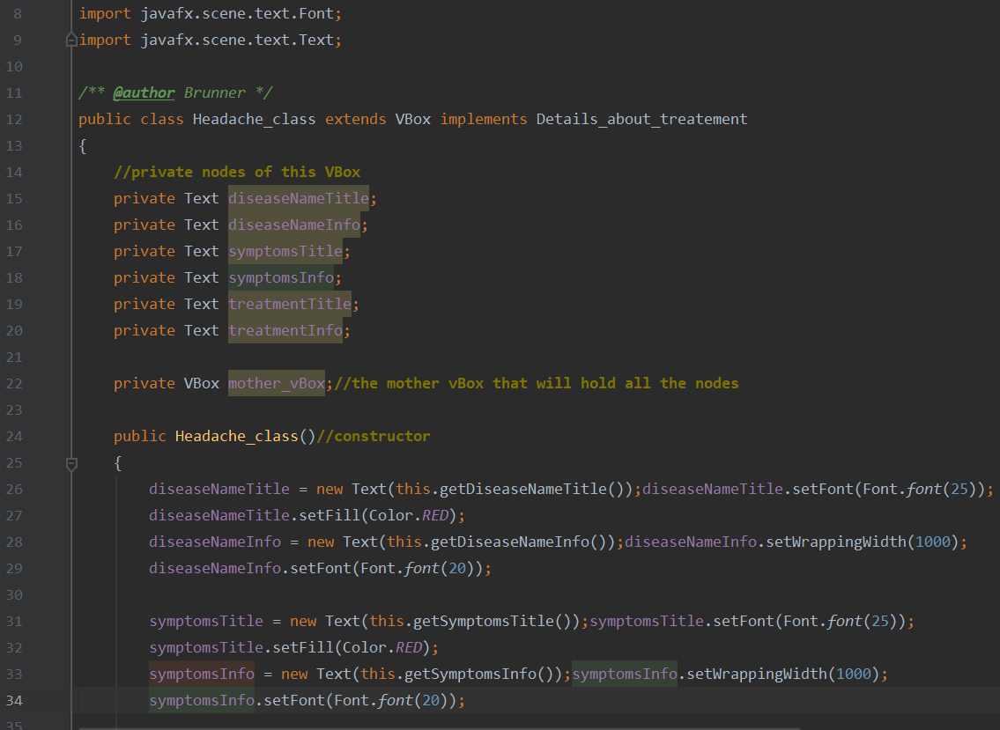

The PHARMACY APP is a project my group mates and I made in 3rd year in university(2018). I was responsible for building the software application of our project
PHARMACY APP was to serve as first aid for students if medical support was not available at the time. For example, if a student was unwell at 2am and is unable to go out at this time of the night, the PHARMACY APP is his emergency help. This application contains information about diseases, their symptoms and their solutions. It also contains information about over-the-counter-medicines, the sicknesses they solve and the pharmacies near you that you can buy them from. The application also gives you the phone numbers of these pharmacies so you can contact them from your hostel room
Tools I used
I built this application with JAVA, JAVAFX and CSS. I designed the front-end using javafx. This application is an offline software and is expected to run on a desktop computer. That was the constraint of our project. My IDE was ECLIPSE.
Features of the PHARMACY APP
The PHARMACY APP has 2 main windows, 1) a window for viewing common over-the-counter-drugs. From this window, you can read more on each drug's use and how to get it. 2) a window for viewing common diseases. You can select a disease, read on its symptoms and how you can treat it or where to find a drug for it. From the picture below, the first interface of the application contains 2 buttons. Each button takes you to one of the 2 windows.
.png)

.png)
.png) 
